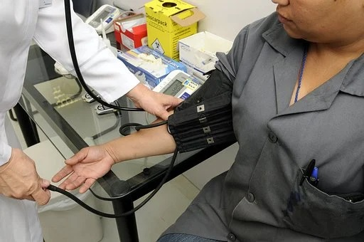
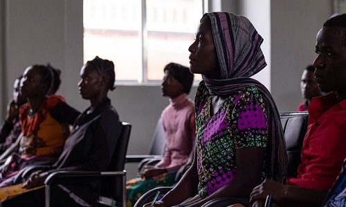

Our Services
ADVOCACY
Advocacy
At SpeakUp, we believe that preventive measures are the most efficient ways of addressing Domestic Violence Issues. To this end, we have embarked on several advocacy programs... our target audience are the following groups-Grassroots Engagement
SpeakUp Team is in continuous engagement with Traditional Rulers, Market women, artisans and other groups on what Domestic entails, the impact it has on the victim, children and the society at large, their role as responders and the need for them to condemn such acts when it comes to their attention.Media
SpeakUp uses the media (print, audio and visual) to bring to the fore, issues of DV, consequential impact this crime has on the parties, the children and the society at large. This is hoped to slowly change society's perception about Sexual and Gender Based Violence.Corporate organisations
SpeakUp regularly engages companies in town hall sessions as a means of reaching the middle class. Faith based institutions Members of SpeakUp are on a continuous basis invited to speak about Sexual and Domestic Violence at churches and mosques. At such fora, members of the congregation and spiritual leaders are encouraged not to ask persons in abusive relationships to remain there or request victims of sexual assault to keep quiet but rather people should be encouraged to seek help. Pastors and Imams are also encouraged to speak about these issues and condemn them outrightly.MEDICALS

MEDICAL SERVICES
Health care providers are an essential link in the coordinated effort to break the cycle of violence and build a healthy community. Identifying and responding to DV in health care settings can make a tremendous difference for patients’ physical health, mental health, safety, and quality of life. Although women are disproportionately impacted by DV, anyone can be a victim regardless of sex/gender, sexual orientation, race, ethnicity, culture, religion, age, income, or level of education. Victims of domestic violence turn to health care providers by the thousands every day seeking.SpeakUp has a pool of clinical psychologists that provide several forms of therapy for victims some of which are cognitive, behavioural, cognitive-behavioural, interpersonal, humanistic, psychodynamic or a combination of a few therapy styles all geared towards improving their lives and assisting them in coping with the trauma associated with SGBV crimes. Victim and the Police.
COUNCELING
Counceling
SpeakUp have a team of professional counselors that interact on a regular basics with victims of domestic violence to help them through the strauma of abuse.This is also relevant to help a victim of DV heal psychologically and emotionally from the various abuses the have gone through.

EMPOWERNMENT

TRUST FUND
Survivors of Domestic and sexual violence may suffer from financial strains just as devastating as their physical injuries and emotional trauma.The financial difficulties may emanate from unpaid medical bills, and inability to work caused by injury. Even more pressing is the fact that financial stress often leaves survivors stuck in abusive relationships because their partners are often the breadwinners of the home and they do not have any source of income to take care of themselves and their children on their own.
The SpeakUp Team has create a DV Trust Fund in order to provide financial assistance to victims and their families. And while no amount of money can erase the trauma and grief victims suffer, this aid can be crucial in the aftermath of abuse. By paying for care that helps restore victims' physical and mental health, and by replacing lost income for victims who cannot work and for families where the breadwinner is an abuser, the Trust Fund assists survivors in direct ways.
Quick Link
About
Services
Support Us
Contact Us
Contact Us
Phone:+234-8088-330-2128
Email: info@speakup.gmal
Address: Plot2, No11, Military Avenue
Ikeja, Lagos, Nigeria
Open: 9am-5pm(Mon-Fri)
SpeakUp
If you need help immediately,please dial 911 or call our 24-hour
hotline at 234-8088-330-2128
@2022 by SpeakUp | Terms of Use | Privacy Policy...